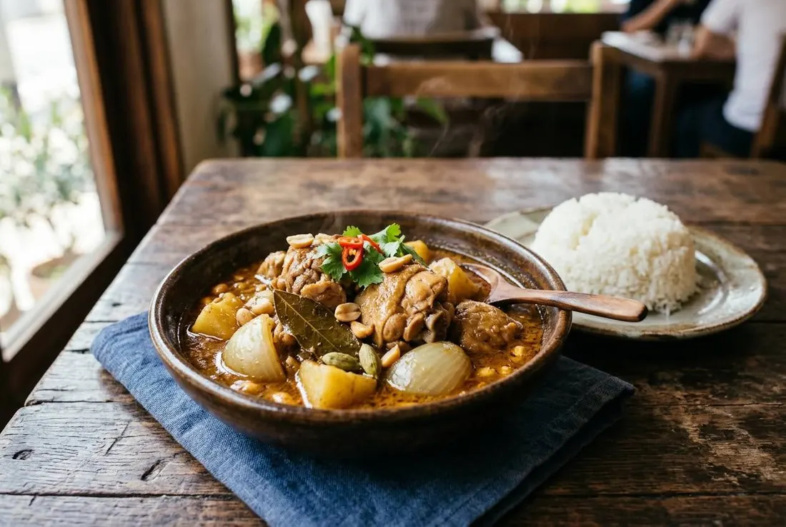

The curry CNN ranked the world's best food. Nutmeg, mace, cardamom, cinnamon and cloves pounded into a paste, coconut cream cracked, potatoes and tamarind. Not peanut sauce — ever.

Massaman is Thai cuisine's Persian thread. The name comes from "Muslim" — the dish entered Siam through Persian and Indian traders and was refined in the royal kitchens. Its oldest endorsement is literary: King Rama II's nineteenth-century food poem sings of "massaman, a curry of my beloved" — fragrant with cumin, fierce in heat. Two centuries later, CNN Travel ranked it the #1 food in the world (2021), and in 2022 Chef Chumpol Jangprai of R-HAAN (2 Michelin stars) served his massaman to the 21 world leaders of the APEC summit gala.
The dish's identity is its spice arsenal — nutmeg, mace, cardamom, cinnamon, cloves, cumin and coriander seed, dry-roasted and pounded with the chillies and aromatics. Western versions flatten this into "mild red curry with peanut butter." That is not this dish.
| Thai | English | Amount |
|---|---|---|
| พริกชี้ฟ้าแดงแห้ง (แกะเม็ด) | Dried red spur chillies, deseeded | 5–6 |
| พริกขี้หนูแดงแห้ง (แกะเม็ด) | Dried red bird's eye chillies, deseeded | 9–10 |
| กระเทียมไทย | Thai garlic | 2 tbsp |
| หอมแดง | Shallots | 2 tbsp |
| ตะไคร้ | Lemongrass | 2 tbsp |
| ข่า | Galangal | 1 tbsp |
| ผิวมะกรูด | Makrut lime zest | 1 tsp |
| กะปิ | Shrimp paste | ⅓ tbsp |
| ลูกผักชี (คั่ว) | Coriander seeds, dry-roasted | 1 tbsp |
| ยี่หร่า (คั่ว) | Cumin, dry-roasted | ½ tbsp |
| ลูกจันทร์ | Nutmeg | 1 |
| ลูกกระวาน (แกะเปลือก) | Cardamom pods, shelled | 5 |
| ดอกจันทร์ | Mace flower | 1 |
| อบเชย (คั่ว) | Cinnamon sticks, dry-roasted | 2 |
| กานพลู | Cloves | 2 |
| เกลือ | Salt | 1 tsp |
| Thai | English | Amount |
|---|---|---|
| สะโพก/น่องไก่ | Chicken thighs and drumsticks | 1 kg |
| มันฝรั่ง | Potatoes, peeled and cut | 600 g |
| หอมใหญ่ | Onions, quartered | 300 g |
| หัวกะทิ | Coconut cream | 600 g |
| หางกะทิ | Coconut milk | 600 g |
| ลูกกระวาน | Cardamom pods | 10 g |
| ใบกระวาน | Bay leaves | 2 g |
| ถั่วลิสงคั่ว | Roasted peanuts | 50 g |
| น้ำมะขามเปียก | Tamarind water | 4 tbsp |
| น้ำตาลปี๊บ | Palm sugar | 5 tbsp |
| น้ำปลา | Fish sauce | 6 tbsp |
Braise first: 1 kg of beef plate in 4 cups coconut milk with a little salt, low and patient — 1 hour 10 minutes to 1½ hours until tender. Then fry 200 g of paste in cracked coconut cream, add the beef, sweet potatoes (600 g), quartered onions (200 g), roasted peanuts (80 g) and 6 roasted cardamom pods.
Balance: 200 g coconut sugar, 100 g tamarind water, fish sauce and salt — Pim's own balance is a light sour leading, rounded sweet, salt at the finish, and she notes taste is personal: some like salt to lead, some sweet, some sour.
Finish: simmer 30 minutes until the onions soften and sweet potatoes are tender, then pour over the remaining coconut cream and bring back to the boil.
Protein. Chicken, beef, duck, lamb, even tofu — all standard. Beef is the traditional grand version; chicken is the everyday one.
Potato vs sweet potato. Both are used; sweet potato is the southern/home alternative.
Peanuts vs cashews. Thai Wikipedia lists both; peanuts are the commoner.
Star anise. Some home versions add it; others (and most shop pastes) skip it.
The balance. Pim is explicit that the sour-sweet-salty order is personal preference — no single canonical balance exists.
This recipe is translated from the following Thai-language sources. Where they disagree, we've said so.
1. Aroifin (28 May 2025) — "วิธีทำ แกงมัสมั่นไก่ อาหารไทยที่อร่อยที่สุดในโลก" (CNN #1 reference) — aroifin.com
2. Pim's Kitchen (26 Aug 2021) — "มัสมั่นเนื้อ" (beef massaman, braise-first) — pim.in.th
3. Thai Wikipedia — "แกงมัสมั่น" (origin, ingredients, Rama II poem) — th.wikipedia.org
4. R-HAAN (2022) — "มัสมั่นไก่พอทพาย" by Chef Chumpol, served at the APEC summit gala — facebook.com